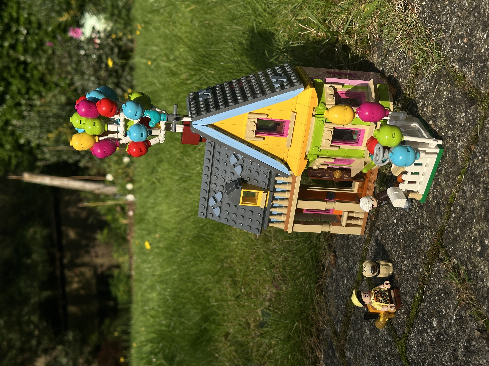
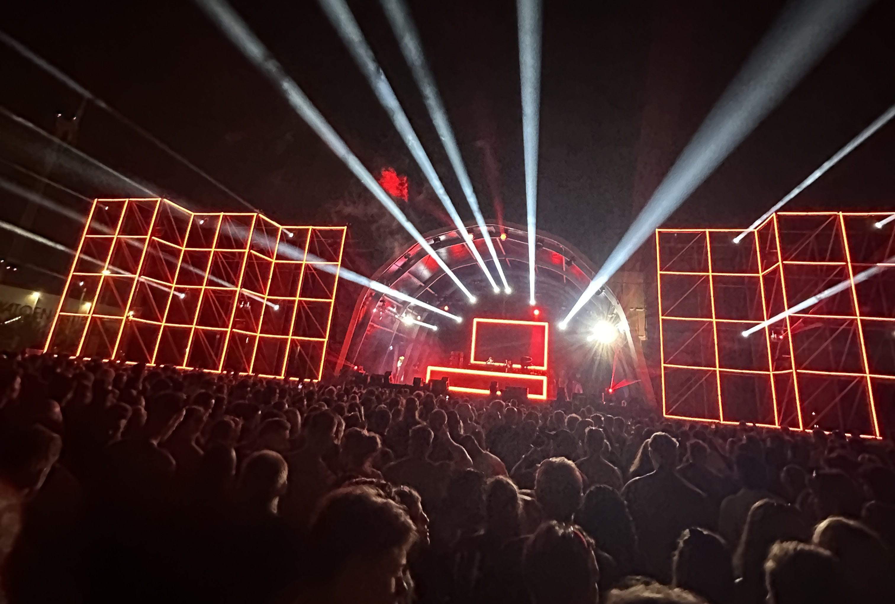
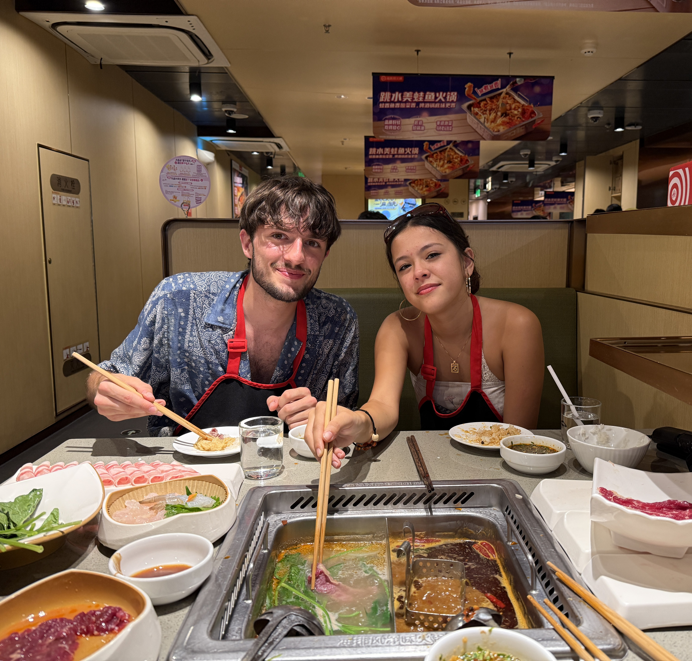

Template referentie
Deze pagina staat niet in de navigatie. Het is een live demo van de drie sectie-templates. Kopieer een sectie hieronder (uit de broncode) en plak ze in eender welke pagina. Alle styling/kleuren pas je aan in het THEME CONFIG blok bovenaan main.css.
Template A: row
Optionele subtitel
Tekst en afbeeldingen naast elkaar. Op mobiel klapt dit automatisch onder elkaar. Zet de afbeelding voor of na de text-container om de kant te kiezen.
Knop Tweede knopOptioneel uitklapblok
Langere tekst die standaard dichtgeklapt is.
Template B: grid (--cols: 3)
Intro-tekst over de volledige breedte. Daaronder cellen in een raster. Op mobiel wordt dit één kolom.



Template B: grid (--cols: 2, met tekst)
Cel 1
Een grid-cel kan ook gewoon tekst zijn in plaats van een afbeelding.
Cel 2
Handig voor een overzicht van projecten, reizen, skills, ...
Template C: full
Eén grote sectie. Goed voor contact, intro's of een grote foto.
